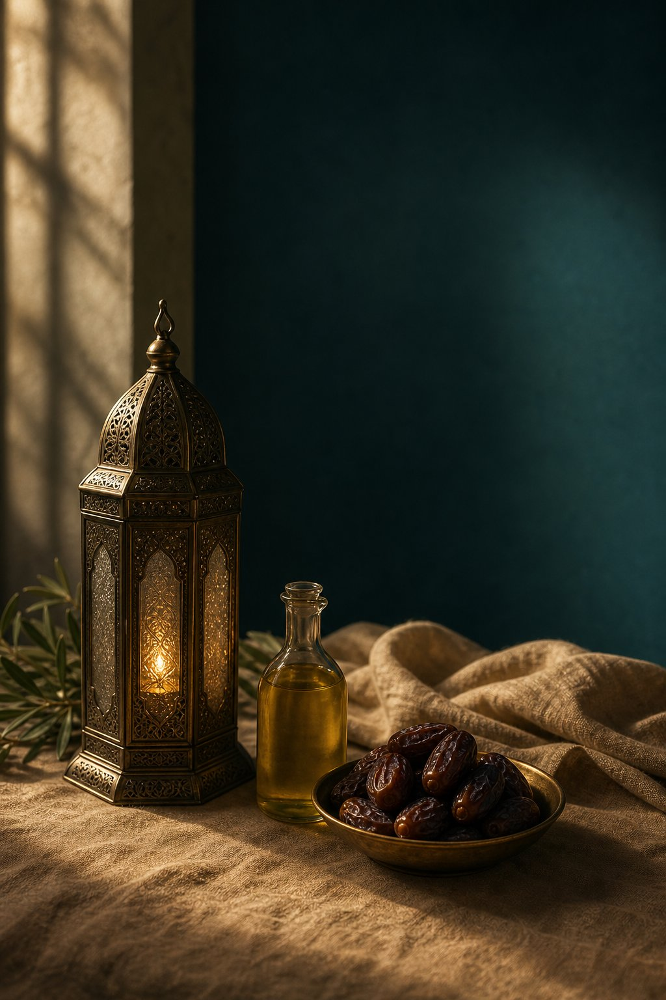

Intention
Ruqyah is a du‘ā. The intention should always be to ask Allah to remove the evil by the words of the Qur’ān, never by any other means.
Bi-weekly online spiritual healing for physical, emotional and spiritual ailments, upon the Qur’ān and Sunnah, free of cost.
Send us your details and we will add you to the next session and share the joining details with you. Nothing is asked for in return.
Allah ﷹ says: “And We send down in the Qur’ān that which is a cure and a mercy for the believers.” (17:81–82)
The Messenger of Allah ﷺ said: “Make good use of the two cures: honey and the Qur’ān.” (Ibn Mājah)
Seeking treatment through the Qur’ān is not only a means of cure. It is a declaration of belief in the Book of Allah, and one of the best ways to build īmān and reaffirm tawḥīd.

Ruqyah is a du‘ā. The intention should always be to ask Allah to remove the evil by the words of the Qur’ān, never by any other means.
Recite loudly and clearly, with firm conviction and belief in Allah, who Alone gives cure. Doubt in the words is doubt in the One who sent them.
Like all treatment, consistency is key. Daily recitation, du‘ā and the other treatments must be maintained for positive results.
Sūrah al-Fātiḥah, Āyah al-Kursī (2:255), the last three sūrahs (112, 113, 114), 2:284–286, 7:117–119, 10:81–82 and 20:69, together with the invocations of the Sunnah, each with its reported number of repetitions. The full Arabic text is in the booklet below; we do not paraphrase the words of Allah.
Download the booklet (PDF)“There emerges from their bellies a drink, varying in colours, in which there is healing for people.” 16:69
“Indeed, in black seed is a cure for all diseases except sām (death).” Muslim
“Use olive oil in eating and for applying on the body, for it is from a blessed tree.” Tirmidhī
“The water of zamzam is for whatever it is drunk for.” Ibn Mājah
“Whoever eats seven ʻajwah dates in the morning, neither magic nor poison will harm him that day.” Bukhārī
“Jibrīl informed me that cupping is the most beneficial medicine for the people.” Ḥākim
“Talbīnah brings comfort to a sick person's heart, and relieves some of their sorrow and grief.” Bukhārī
“Make good use of senna and sannūt (honey), for indeed there is a cure in both of them for every disease except sām.” Ibn Mājah
The best means of safeguarding yourself from evil eye, magic and other afflictions. Never abandon them. One who is cured but neglects them remains exposed.
Recite them three times in the morning and evening, three times before sleep, once after every ṣalāh, and when ill. “No seeker has sought protection with anything like them.”
The strongest protection against the evil of jinn. Read it after every ṣalāh and before sleeping, along with the last two verses of Sūrah al-Baqarah (2:285–286).
Say MāshāAllah over what you love. Conceal your good news except from those who rejoice at your good fortune. It can be those closest to you whose envy harms most.
Be wary of posting pictures of yourself, your possessions or your children. Do not gaze wistfully at the blessings of others and envy them for it.
Mention the name of Allah when entering the house and eating, pray Fajr in congregation, spread salām, and give gifts, for good manners dispel the jealousy of others.
Ruqyah is the practice of treating illnesses through Quranic āyāt and the invocations prescribed by the Messenger of Allah ﷺ. It is sought as a cure for the evil eye, magic, jinn and physical ailments, and it contains nothing of shirk: no amulets, no charms, no seeking help from other than Allah.
Sessions run bi-weekly, online. Once your request is received you are added to the schedule and sent the joining link before each session.
No. Ruqyah Shariyah sessions are offered completely free of charge as a community service, as are Tafseer, thematic study, Fiqh and individual counseling.
There is a common misconception that Ruqyah is exclusive to certain individuals. Every Muslim can perform it, and should. We teach you to do it for yourself, not to depend on us.
Recite yourself if you can do so properly. Because Ruqyah often needs to be done for long periods, listening to Ruqyah audio, or having someone recite over you, is completely valid, with full concentration and without falling asleep.
Listen for a few hours a day if possible. Ideally pause other activities and focus on the Ruqyah until you get better. This may take several days or longer, depending on the severity of the affliction.
Question your yaqīn (conviction) and your niyyah (intention). Turn to istighfār. There may be a sin that is preventing Allah's help. Istighfār opens all closed doors. Consistency matters: like all treatment, daily recitation must be maintained.
Magic and the evil eye can cause real physical illness, which needs medical treatment alongside Ruqyah. Along with conventional medicine, adopt a healthy lifestyle and the sunnah prescription of eating less but more wholesome, halāl food. After Ruqyah you may feel weak, so energy-giving foods such as talbīnah (barley porridge) help.
The best gauge is the Qur’ān itself. Nothing can hide from the words of the Almighty. While reciting or listening you may feel pain, restlessness, fear, itching, vomiting, fever, sweating or sleepiness. If these arise, keep going, especially with the āyāt that bring the symptoms on.
Sessions are conducted by the Al Ma'arifa team under the supervision of qualified teachers. All sessions are conducted separately for sisters.

Tafseer, short and long, and the Ramzan Dawra are free, as are Ruqyah and individual counseling with NLP-based Time Line Therapy.
Guidance on this page is drawn from A Remedy for Illnesses, Evil Eye, Magic and Jinn from the Qur’ān and Sunnah (Ummah Welfare Trust), used for teaching within our sessions. The Arabic text of the Ruqyah is reproduced in that booklet, which you can download above. Ruqyah is a means; all cure is from Allah ﷹ alone, and it never replaces necessary medical care.